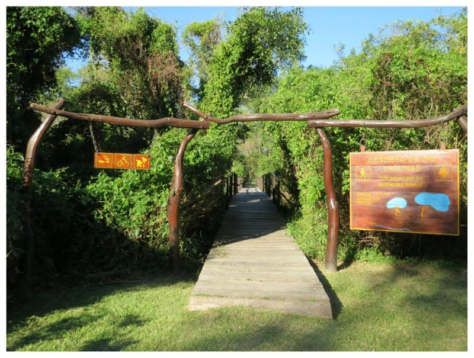
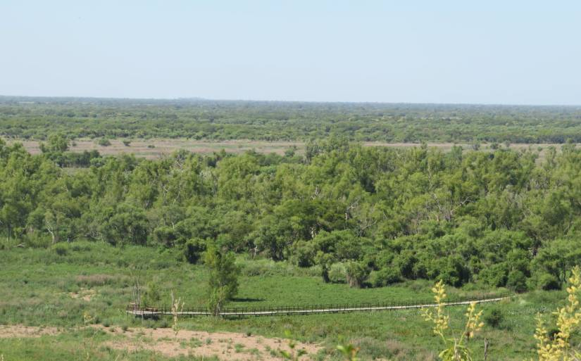

Senderismo: Recorridos Detallados
Sendero Laguna Curiyú

400m / 30 min. Diseñado para la accesibilidad de personas con discapacidad motriz. Apreciá el ambiente acuático.
Sendero de Las Lagunas (Baja)

1000m / 40 min. Conecta el bosque de alisos hasta los miradores de Laguna Irupé y Laguna Las Piedras.
Sendero del Espinal

3400m / 1:40 h. Culmina en un hermoso punto panorámico con vistas del área protegida y el bosque de barranca.